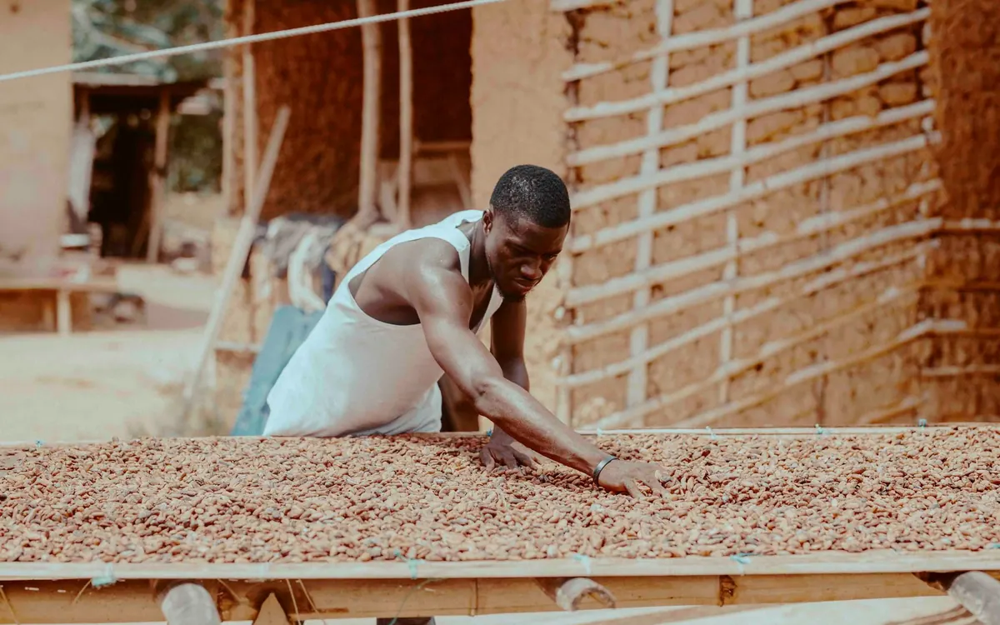

Investir et découvrir
Un territoire de production, de mer et de potentiel touristique, prêt à accueillir vos projets.
Des filières porteuses
Le Gbôklè conjugue terres agricoles fertiles et façade maritime.
Hévéaculture
Une filière structurante : plantations villageoises, replantation, transformation du caoutchouc naturel.
Cacao et palmier à huile
Cultures de rente complétant les revenus agricoles, avec un potentiel de transformation locale.
Pêche et aquaculture
Pêche artisanale, mareyage, conservation du poisson et pisciculture lagunaire.
Tourisme balnéaire
Plages, lagunes, patrimoine : hébergement, restauration et activités à développer.
Agro-transformation
Séchage, emballage, froid et logistique pour valoriser les produits sur place.
Logistique et services
Pistes rurales, port de Sassandra, commerce et services aux producteurs.
Pourquoi investir dans le Gbôklè ?
- Un accompagnement de la Région pour monter et suivre votre projet
- Des ressources naturelles abondantes et diversifiées
- Un accès à l'Atlantique et au fleuve Sassandra
- Une main-d'œuvre jeune et motivée
- Des programmes d'infrastructures qui désenclavent les zones de production

Le Gbôklè à visiter
Quelques idées pour les curieux et les porteurs de projets touristiques.
Balade à Sassandra
Front de mer, vieux quartiers et marché de poisson : la ville se découvre à pied.
Plages et couchers de soleil
Des plages tranquilles pour se détendre, loin des foules.
Vie de pêcheurs
Rencontre avec les pêcheurs, retour des pirogues, cuisine de la mer.
Fêtes et culture
Festivals, danses et traditions : consultez l'agenda de la Région.
Guide de l'investisseur
Un document pour présenter les atouts, les secteurs prioritaires et les démarches pour s'installer dans le Gbôklè.